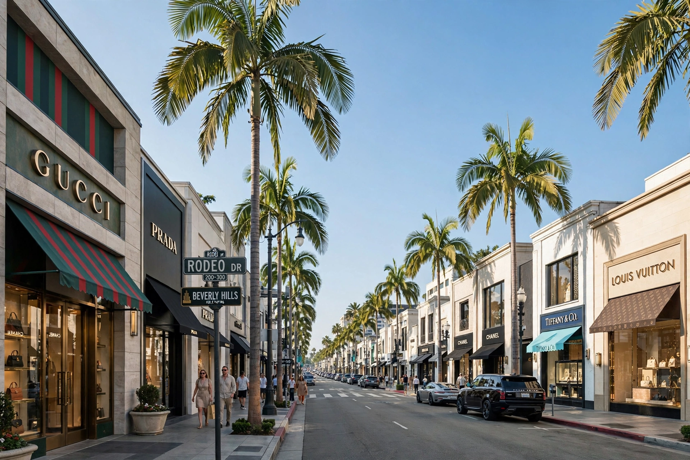

| Country | United States |
|---|---|
| State | California |
| County | Los Angeles |
| Incorporated | January 28, 1914 |
| Area | 5.71 sq mi (14.79 km²) |
| Population (2020) | 32,701 |
| ZIP Codes | 90209–90213 (90210 best known) |
Beverly Hills is a city in Los Angeles County, California, United States. A notable and historic suburb of Los Angeles, it is located just southwest of the Hollywood Hills and roughly 12.2 miles (19.6 km) northwest of downtown Los Angeles. Beverly Hills is entirely surrounded by the city of Los Angeles. Its area is about 5.71 square miles (14.8 km²), and it had a population of 32,701 at the 2020 census.
Sometimes jocularly referred to by its primary ZIP Code, "90210", Beverly Hills is known worldwide as a centre of wealth and luxury, home to many Hollywood stars, and for its high-end shopping district, Rodeo Drive.
The area was originally a Mexican-era rancho, Rancho Rodeo de las Aguas, used for lima bean farming. In 1900, Burton Green and partners in the Rodeo Land and Water Company purchased the land seeking oil; finding water instead, they developed it as a residential community. It was incorporated as a city in 1914. The Beverly Hills Hotel, opened in 1912, became an early social anchor, and film stars including Mary Pickford and Douglas Fairbanks built estates there in the 1920s, establishing the city's association with the entertainment industry.
Beverly Hills is bordered by Los Angeles neighbourhoods including Bel-Air and Westwood to the northwest and west, West Hollywood to the northeast, and the Fairfax District to the east. The relatively flat southern portion of the city, known as "the Flats", contains most of its famous palm-lined streets; the northern portion rises into the foothills around Trousdale Estates.
Rodeo Drive and the surrounding "Golden Triangle" form one of the world's most famous luxury retail districts. The city has long been depicted in film and television — from The Beverly Hillbillies to Beverly Hills, 90210 and Pretty Woman — and its police and fire services, schools, and manicured appearance are part of a carefully maintained civic identity.